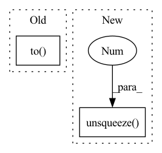

Pattern ID :1866
Before Change
batch, city_t, xy = x.size()
embed_enc_inputs = self.Embedding(x)
enc_h, (h, c) = self.Encoder(embed_enc_inputs, None)
dec_input = self.dec_input.unsqueeze(0).repeat(batch,1).unsqueeze(1).to( device)
for i in range(city_t):
_, (h, c) = self.Decoder(dec_input, (h, c))
query, ref = h.squeeze(0), enc_h
for i in range(self.n_glimpse):After Change
query = query.squeeze(1)
for i in range(self.n_glimpse):
query = self.glimpse(query, ref)
query = query.unsqueeze(1 )
"""
- page 5/15 in paper
critic model architecture detail is out there, "Critic’s architecture for TSP"
- page 14/15 in paperIn pattern: SUPERPATTERN
Frequency: 3
Non-data size: 2
Instances Fragment ID: 13146831
Project Name: rintarooo/tsp_drl_ptrnet
Commit Name: ab78416ee96de7b4b780b38a77f4956518afa19c
Time: 2020-11-12
Author: 310rnomeado@gmail.com
File Name: critic.py
M Class Name: PtrNet2
N Class Name: PtrNet2
M Method Name: forward(3)
N Method Name: forward(3)
M Parent Class: nn.Module
N Parent Class: nn.Module
M File Name: critic.py
N File Name: critic.py
M Start Line: 35
M End Line: 38
N Start Line: 40
N End Line: 51
Before Change
enc_h, (dec_h0, dec_c0) = self.Encoder(embed_enc_inputs, None)
hidden = enc_h.size(2)
dec_state = (dec_h0, dec_c0)
dec_i1 = torch.rand(batch, 1, hidden).to( device) //hidden not embed
for i in range(city_t):
dec_h, dec_state = self.LSTMprocess_block(dec_i1, dec_state)
dec_i1 = self.attending_mechanism(enc_h, dec_h)After Change
batch, city_t, xy = x.size()
embed_enc_inputs = self.Embedding(x)
enc_h, (h, c) = self.Encoder(embed_enc_inputs, None)
dec_input = self.dec_input.unsqueeze(0).repeat(batch,1).unsqueeze(1 ) .to(device)
for i in range(city_t):
_, (h, c) = self.Decoder(dec_input, (h, c))
query, ref = h.squeeze(0), enc_h Fragment ID: 13146832
Project Name: rintarooo/tsp_drl_ptrnet
Commit Name: baba7bab0eb239771948cc519681967a5498129b
Time: 2020-08-23
Author: 310rnomeado@gmail.com
File Name: critic.py
M Class Name: PtrNet2
N Class Name: PtrNet2
M Method Name: forward(3)
N Method Name: forward(3)
M Parent Class: nn.Module
N Parent Class: nn.Module
M File Name: critic.py
N File Name: critic.py
M Start Line: 31
M End Line: 46
N Start Line: 35
N End Line: 50
Before Change
if len(noise_level.shape) > 1:
noise_level = noise_level.squeeze(-1)
half_dim = self.n_channels // 2
exponents = torch.arange(half_dim, dtype=torch.float32).to(
noise_level) / float(half_dim)
exponents = 1e-4 ** exponents
exponents = LINEAR_SCALE * \
noise_level.unsqueeze(1) * exponents.unsqueeze(0)After Change
step = torch.arange(count, dtype=noise_level.dtype,
device=noise_level.device) / count
encoding = noise_level.unsqueeze(
1) * torch.exp(-math.log(1e4) * step.unsqueeze(0 ) )
encoding = torch.cat(
[torch.sin(encoding), torch.cos(encoding)], dim=-1)
return encoding Fragment ID: 13146833
Project Name: janspiry/image-super-resolution-via-iterative-refinement
Commit Name: b67b0027e58f09f86887422de2e539fdc67b972f
Time: 2021-08-06
Author: lw_jiang@foxmail.com
File Name: model/sr3_modules/unet.py
M Class Name: PositionalEncoding
N Class Name: PositionalEncoding
M Method Name: forward(2)
N Method Name: forward(2)
M Parent Class: nn.Module
N Parent Class: nn.Module
M File Name: model/sr3_modules/unet.py
N File Name: model/sr3_modules/unet.py
M Start Line: 30
M End Line: 38
N Start Line: 45
N End Line: 52